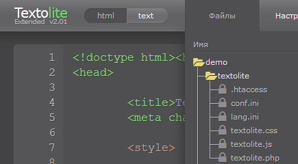
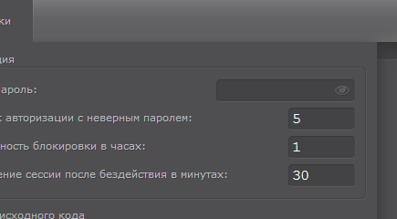
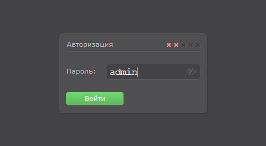
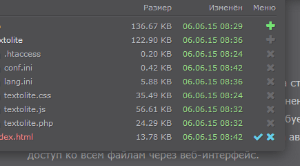

Система для редактирования сайтов, основанных на статических HTML-файлах.
Ориентирована на небольшие сайты, требующие периодического обновления.
Все изменения на сайте сохраняются прямо в HTML-файлах, что избавляет от необходимости иметь сервер базы данных.
Не требует какой-либо интеграции с сайтом, достаточно разместить каталог с системой в корне сайта.
Основной особенностью Textolite является визуальный редактор с возможностью редактировать содержимое сайта
без каких-либо форм ввода. Для более серьезных изменений предусмотрен редактор исходного кода
с подсветкой синтаксиса и нумерацией строк. Есть также удобный файловый менеджер
с функцией многопоточной пакетной загрузки файлов на сервер.
Редактирование картинок
В расширенной версии появилась возможность менять HTML-картинки перетаскиванием файла в окно браузера,
а также удалять, клонировать и перемещать элементы с HTML-картинками.
Здесь можно попробовать эти функции в действии. В демоверсии заливка картинок на сервер отключена,
но можно увидеть общий принцип работы.
- 
- 
- 
- 
Лицензионное соглашение
Пользователь имеет право использовать систему по прямому назначению на любых проектах,
в том числе коммерческих. Допускается создание альтернативных ссылок на оригинальный архив с системой
или прямая передача третьим лицам. Пользователь не имеет право:
- Вносить какие-либо изменения в исходный код системы (textolite.php, textolite.js, textolite.css).
- Распространять или использовать модифицированные копии системы.
- Создавать собственные продукты, основанные на исходном коде системы.
- Распространять или использовать исходные файлы или какие-либо части системы отдельно.
- Переименовывать, изменять или удалять копирайты системы.
Использование системы означает полное согласие с условиями данного соглашения.
Системные требования
Для нормальной работы системы нужен веб-сервер Apache с PHP версии не ниже 5.2 и действующим модулем mod_rewrite.
После дополнительной настройки система может работать под Nginx и IIS,
а также без модуля mod_rewrite и его аналогов. Если на сервере есть модуль mod_pagespeed, его нужно отключить.
Системе нужны права на запись для своего каталога и для всех файлов сайта.
Чтобы не было проблем с отображением нелатинских символов, все редактируемые файлы должны быть в кодировке utf-8.
Имена файлов и каталогов также должны быть в кодировке utf-8, если в них есть нелатинские символы (для PHP 7 неактуально).
Установка
Необходимо распаковать скачанный архив в корневой каталог сайта.
После распаковки в корне сайта должен появиться каталог textolite.
Далее через адресную строку браузера нужно перейти в каталог системы http://адрес_сайта/textolite/.
Если все сделано правильно, система выведет форму авторизации. Пароль по умолчанию "admin".
После первого входа пароль необходимо изменить в настройках системы.
Каталог системы можно переименовывать. Можно устанавливать одновременно несколько систем.
Можно устанавливать отдельную систему для каждого раздела сайта, систему необязательно устанавливать в корне сайта.
Для запуска системы под Nginx без Apache нужно настроить сервер по параметрам из файла .htaccess.
Файл .htaccess в этом случае можно удалить. Для стандартной установки можно использовать следующий код:
index textolite.php;
if (!-e $request_filename) {rewrite ^/textolite/(.*)$
/textolite/textolite.php?q=$1}
location ~ \.(ini|log)$ {deny all;}
Для запуска системы под IIS нужно создать в каталоге системы файл web.config по параметрам из файла .htaccess.
Файл .htaccess в этом случае можно удалить. В большинстве случаев должен подойти
готовый web.config.
Для запуска системы на любом сервере без файла .htaccess нужно переименовать файл textolite.php в index.php,
а файл .htaccess удалить. В этом случае нужно закрывать прямой доступ к ini-файлам каким-либо иным способом.
Полезные советы
Если сайт будут редактировать несколько человек, можно установить для каждого отдельную систему.
В этом случае у всех будут отдельные настройки, пароль, страница входа.
Есть также возможность разграничения прав между такими пользователями. В файле conf.ini есть параметр allowed_ext,
в котором можно перечислить расширения файлов, к которым разрешен доступ из этой системы.
На некоторых сайтах встроенные скрипты могут мешать установке фокуса на элементах в визуальном редакторе,
если они привязаны к левому клику. Например, при попытке установить фокус появляется всплывающее окно
или какая-нибудь анимация, которая в итоге мешает редактированию. В таких случаях можно ставить фокус средней кнопкой мыши.
Клик средней кнопкой мыши блокирует все события сайта, что можно использовать для обхода таких скриптов.
Часто задаваемые вопросы
- 1. Как восстановить забытый пароль?
- Восстановить доступ в случае утраты пароля можно переустановкой системы. Для этого нужно иметь доступ к серверу.
Хеш пароля хранится в файле conf.ini. Если заменить файлы системы новыми из архива, пароль сбросится на стандартный "admin".
На работе сайта данная процедура никак не отразится.
-
- 2. Что означает сообщение "Нет прав на запись в файл"?
- Некоторые хостинг-провайдеры по умолчанию ограничивают права скриптов на запись в файл.
В этом случае права доступа нужно настраивать вручную через панель управления хостингом или FTP-клиент.
Инструкции по изменению прав доступа можно найти либо в интернете, либо в разделах помощи на сайте своего хостинг-провайдера.
-
Настройки
Технически все настройки хранятся в файле conf.ini. Файл имеет стандартный INI-синтаксис.
Панель настроек в интерфейсе системы в основном просто перезаписывает содержимое этого файла.
Через интерфейс можно менять не все существующие настройки, некоторые параметры можно менять только ручным редактированием этого файла.
Есть также исключительно технические параметры, не предназначенные для ручного редактирования.
auth_error_limit (Попыток авторизации с неверным паролем)- Ограничивает максимально допустимое количество ошибок при введении пароля.
Если количество ошибок с одного IP-адреса превышает это значение,
пользователь блокируется на период, который можно настроить в следующем параметре (
auth_lockout_duration).
auth_lockout_duration (Длительность блокировки в часах)- Отвечает за длительность блокировки пользователей,
превысивших максимально допустимое количество ошибок при введении пароля (
auth_error_limit).
После истечения указанного периода пользователь получает одну дополнительную попытку авторизации.
auth_session_reset (Завершение сессии после бездействия в минутах)- Ограничивает время жизни сессии после потери системой возможности поддерживать соединение с сервером.
logout_to_site (Перенаправлять на сайт после выхода из системы)- В случае включения выход из системы будет сопровождаться перенаправлением пользователя
на сайт по адресу последней редактируемой страницы или файла.
site_scripts (Включить скрипты сайта во время редактирования)- Скрипты сайта могут мешать редактированию некоторых элементов в визуальном редакторе.
Отключение скриптов может сделать такие элементы доступными для визуального редактирования.
site_styles (Включить стили сайта во время редактирования)- Стили сайта могут мешать редактированию некоторых элементов в визуальном редакторе.
Отключение стилей может помочь добраться до таких элементов в визуальном редакторе.
image_rewriting (Перезаписывать старый файл, если имена файлов совпадают) (расширенная версия)- Данная опция контролирует функцию замены картинок перетаскиванием файла в окно браузера.
В случае включения система будет автоматически перезаписывать файл,
имя которого совпадает с именем вставляемой картинки. В случае отключения новый файл переименовывается.
link_replacing (Автоматически менять адреса ссылок у картинок-ссылок) (расширенная версия)- Опция определяет поведение всех функций замены картинок перетаскиванием на картинках-ссылках.
В случае включения система будет вместе с картинкой менять адрес ссылки на адрес вставленного файла-картинки,
но только в тех случаях, когда существующая ссылка так же имеет адрес файла-картинки.
name_correction (Удалять нелатинские символы в именах вставляемых картинок) (расширенная версия)- Опция контролирует функцию замены картинок перетаскиванием файла в окно браузера.
В случае включения система будет автоматически убирать нелатинские символы в именах вставляемых файлов-картинок.
code_redraw_delay (Обновлять код после бездействия в миллисекундах)- Когда пользователь вводит новый код в редакторе исходного кода, система ждет паузу в процессе ввода,
чтобы проверить и оформить новый код. Данный параметр определяет, какой должна быть пауза,
чтобы система могла начать переоформление. Чем меньше его значение, тем чаще будет переоформляться новый код в процессе ввода.
Увеличение значения может заметно снизить нагрузку на браузер.
code_undo_limit (Количество шагов для отката изменений через Ctrl+Z)- Определяет максимальную глубину отката изменений в редакторе исходного кода через Ctrl+Z.
code_highlighting (Включить подсветку синтаксиса и нумерацию строк)- Подсветка синтаксиса и нумерация строк облегчает редактирование кода.
Отключение может заметно снизить нагрузку на браузер.
folder_size (Отображать размер каталогов в файловом менеджере)- Получение данных о размере каталогов может замедлять работу файлового менеджера на больших сайтах со сложными структурами.
На таких сайтах можно отключить отображение размера каталогов.
default_file (Главная страница или файл сайта)- Значение должно содержать имя реально существующего в корне сайта файла.
Система будет открывать в редакторе этот файл в качестве главной страницы сайта,
а также во всех случаях, когда файл для редактирования не выбран или не может быть открыт.
recovery_points (Максимальное количество точек восстановления) (расширенная версия)- Параметр ограничивает максимальное количество точек восстановления, которые система может хранить на сервере.
Если количество точек превысит его значение, каждая новая точка будет перезаписывать одну самую старую из всех существующих.
Нулевое значение полностью отключает систему резервного копирования и восстановления.
update_final (Сообщать о появлении новых версий системы)- В случае включения система будет сообщать о появлении новых версий системы.
update_beta (Сообщать о появлении новых beta-версий системы)- В случае включения система будет сообщать о появлении новых beta-версий системы.
lang (Язык интерфейса)- Значение должно содержать список двухбуквенных кодов языка (ISO 639-1),
которые имеют соответствующую секцию с переводом в файле lang.ini.
Язык из этого списка, совпадающий с языком браузера, автоматически включается системой в качестве языка интерфейса,
во всех остальных случаях включается первый язык из этого списка.
auth_bot_filter- В случае включения система будет блокировать все запросы, имеющие типичные признаки ботов.
Отключать имеет смысл только в случае каких-либо проблем с данным механизмом.
document_root- Если сервер возвращает неправильный DOCUMENT_ROOT и нет возможности на это повлиять со стороны сервера,
можно указать правильный DOCUMENT_ROOT с помощью этого параметра.
В этом случае DOCUMENT_ROOT сервера будет игнорироваться системой.
url_rewrite- В системе есть механизм автоматического определения возможности строить упрощенные пути в адресной строке
в соответствии с правилами модуля mod_rewrite. Если добавить этот параметр,
решение об использовании упрощенных путей будет приниматься в соответствии с его значением.
Добавлять имеет смысл только в случае каких-либо проблем с данным механизмом.
editable_attributes (расширенная версия)- Значение должно содержать список HTML-атрибутов, которые должны быть доступны для редактирования в визуальном редакторе.
editable_ext- Значение должно содержать список расширений файлов, которые система должна открывать в редакторе
в случае выбора этого файла в файловом менеджере.
visual_ext- Значение должно содержать список расширений файлов, которые содержат HTML-код.
Для таких файлов будет доступно визуальное редактирование.
allowed_ext- Значение должно содержать список расширений файлов, к которым разрешен доступ из этой системы.
Все операции с файлами, расширение которых не указано в этом списке, будут запрещены.
Отсутствие значения соответствует свободному доступу ко всем файлам.
Присутствие в этом списке расширений исполняемых на сервере файлов,
которые могут самостоятельно менять другие файлы, создает условия,
соответствующие полному доступу ко всем файлам.
История изменений
- 2.12/12.08.2018
-
- Переписана серверная часть системы, решено несколько комплексных проблем, улучшен файловый менеджер.
- Добавлена возможность отключить механизм получения информации о размере каталогов в файловом менеджере.
- Добавлена возможность указать в conf.ini открываемые в визуальном редакторе расширения файлов.
- Добавлен механизм принудительного обновления кэша страниц после изменения для некоторых браузеров.
- Исправлено несколько проблем с функцией редактирования атрибутов (расширенная версия).
- Исправлена проблема с обработкой некоторых специфических символов (эмодзи).
- Исправлена проблема с обработкой символических ссылок в структуре файлов сайта.
- Исправлена проблема в механизме выбора случайного файла для редактирования.
- Исправлена проблема в работе некоторых механизмов сразу после активации (расширенная версия).
- Исправлено множество мелких проблем.
- 2.11/10.12.2017
-
- Добавлена возможность редактировать атрибуты в визуальном редакторе (расширенная версия).
- Добавлена возможность редактировать элементы форм, svg, canvas, audio, video и другие (расширенная версия).
- Добавлен механизм автоматической корректировки имен вставляемых картинок (расширенная версия).
- Исправлена проблема с заменой видео, ссылка которого имеет параметры (расширенная версия).
- Исправлена проблема с распознаванием картинок, имена которых имеют символы пробела (расширенная версия).
- Исправлена проблема с распознаванием строк, содержащих некоторые специфичные символы.
- Исправлена проблема с распознаванием элементов, HTML-разметка которых написана в верхнем регистре.
- Исправлена проблема с распознаванием некоторых сочетаний строчных элементов.
- Исправлена проблема с установкой системы в каталог с кириллическим названием.
- Исправлено множество мелких проблем.
- 2.10/03.09.2017
-
- Добавлена возможность обновлять и активировать систему через защищенное HTTPS-соединение.
- Добавлена поддержка атрибутов srcset и sizes для функций замены картинок (расширенная версия).
- Улучшена система активации, изменение каталога системы больше не сбрасывает активацию (расширенная версия).
- Улучшен упаковщик исходного кода, уменьшен общий размер системы.
- Изменена последовательность загрузки скриптов, панель теперь должна загружаться быстрей и равномерней.
- Исправлено несколько проблем в механизмах манипуляции разметкой (расширенная версия).
- Исправлена проблема с пропаданием участков кода при визуальном редактировании в некоторых ситуациях.
- Исправлена проблема с появлением служебных тегов системы в коде страниц в некоторых ситуациях.
- Исправлено несколько проблем в работе системы на серверах с PHP 7.
- Исправлено множество мелких проблем.
- 2.09/09.04.2017
-
- Добавлена возможность отключать скритпы и стили сайта во время визуального редактирования.
- Добавлена возможность вручную отключать подсветку синтаксиса и нумерацию строк в редакторе исходного кода.
- Добавлена возможность отключать сообщения о новых версиях в настройках системы.
- Добавлена возможность скрывать группы настроек и восстанавливать настройки по умолчанию.
- Улучшен механизм активации расширенной версии, привязка доменов теперь происходит с подтверждением.
- Улучшен механизм взаимодействия с пользователем по проблеме динамических элементов в визуальном редакторе.
- Улучшен механизм взаимодействия с пользователем по проблеме неправильного DOCUMENT_ROOT на сервере.
- Добавлена возможность указать системе свой DOCUMENT_ROOT в файле conf.ini.
- Добавлена возможность использовать систему без mod_rewrite и аналогов.
- Исправлено множество различных проблем.
- 2.08/18.09.2016
-
- Добавлены всплывающие подсказки с подробным описанием параметров на панели настроек.
- Добавлен механизм автоматической сортировки файлов в файловом менеджере.
- Улучшена совместимость визуального редактора с некоторыми HTML-конструкциями.
- Улучшены некоторые моменты в функции замены картинок перетаскиванием (расширенная версия).
- Исправлено несколько проблем с системой резервного копирования (расширенная версия).
- Изменен блок с информацией о системе на панели.
- 2.07/24.07.2016
-
- Добавлена система резервного копирования и отката последних изменений (расширенная версия).
- Добавлена возможность менять iframe-видео перетаскиванием ссылки с видео-хостингов (расширенная версия).
- Добавлена возможность менять картинки перетаскиванием с других сайтов (расширенная версия).
- Улучшен механизм обновления кэша картинок после замены с перезаписью (расширенная версия).
- Добавлена возможность редактировать PHP-файлы со статичным HTML-кодом в визуальном редакторе.
- Добавлена возможность настроить в conf.ini разрешенные для редактирования расширения файлов.
- Добавлена возможность настроить в conf.ini открываемые в редакторе расширения файлов.
- Добавлен механизм автоматической блокировки ботов на странице авторизации.
- Исправлено множество различных проблем.
- 2.06/20.03.2016
-
- Добавлена возможность редактировать элементы c iframe-вставками (расширенная версия).
- Добавлена возможность автоматически менять адреса ссылок у картинок-ссылок (расширенная версия).
- Добавлена возможность настроить перезапись картинок, если имена файлов совпадают (расширенная версия).
- Добавлено автоматическое изменение атрибута alt при перетаскивании картинок (расширенная версия).
- Исправлена проблема с редактированием картинок с определенным сочетанием атрибутов (расширенная версия).
- Добавлена подсветка исходного кода выделенного в визуальном редакторе элемента (расширенная версия).
- Добавлена возможность настроить перенаправление на сайт после выхода из системы.
- Исправлена проблема с запуском системы на некоторых конфигурациях сервера.
- Исправлена проблема с запуском системы под IIS.
- 2.05/17.01.2016
-
- Переписан визуальный редактор, теперь возможно редактирование любого HTML-кода любого качества.
- Добавлена поддержка мобильных устройств, создан адаптивный интерфейс.
- Добавлена возможность ставить фокус средней кнопкой мыши для обхода всплывающих окон и тому подобного.
- Добавлено перенаправление на ближайшую доступную страницу, когда главная страница отсутствует.
- Добавлена автоматическая проверка прав на запись в файл.
- Исправлена проблема с отображением тега script в редакторе исходного кода.
- 2.04/08.11.2015
-
- Добавлен механизм автооптимизации редактора исходного кода на случай редактирования больших файлов.
- Добавлены новые настройки для режима автоматической оптимизации редактора исходного кода.
- Добавлена возможность изменить доступное количество шагов для отката изменений через Ctrl+Z.
- Исправлена проблема с установкой фокуса на картинки-ссылки в визуальном редакторе (расширенная версия).
- Исправлено несколько мелких проблем с перетаскиванием элементов в визуальном редакторе (расширенная версия).
- 2.03/27.09.2015
-
- Добавлена возможность откатывать изменения в редакторе исходного кода сочетанием клавиш Ctrl+Z.
- Исправлена проблема с передачей исходного кода при переключении режимов на некоторых конфигурациях сервера.
- Исправлена проблема с распознаванием некоторых XHTML-элементов в визуальном редакторе.
- Исправлено несколько мелких проблем, улучшена оптимизация редактора исходного кода.
- Улучшена форма оплаты на сайте, теперь на почту должно приходить уведомление.
- 2.02/12.07.2015
-
- Добавлена возможность менять картинки местами перетаскиванием в визуальном редакторе (расширенная версия).
- Улучшен интерфейс функции замены картинок в визуальном редакторе (расширенная версия).
- Добавлена возможность изменить через панель настроек стартовый файл для редактирования.
- Исправлена проблема с редактированием строк с HTML-мнемониками в визуальном редакторе.
- Исправлена проблема с появлением лишних пробелов в некоторых ситуациях в Opera/Presto.
- Улучшена совместимость визуального редактора с некоторыми сайтами.
- 2.01/07.06.2015
-
- Добавлена возможность редактировать элементы с картинками в визуальном редакторе (расширенная версия).
- Добавлена возможность заменять картинки перетаскиванием файла в окно браузера (расширенная версия).
- Добавлена возможность настроить функцию автозавершения сессии.
- Добавлена возможность отключить уведомление о новой версии.
- Исправлена проблема с распознаванием HTML-разметки некоторых сайтов.
- 2.00/19.04.2015
-
- Добавлена возможность удалять, клонировать и перемещать блоки в визуальном редакторе (расширенная версия).
- Улучшены ключевые механизмы системы, переписан визуальный редактор.
- Добавлена возможность редактировать файлы с расширением xml.
- Исправлена проблема с сохранением HTML-мнемоников в визуальном редакторе.
- Улучшена работа системы на старых версиях Apache и PHP.
- Добавлена английская версия сайта.
- 1.05/25.01.2015
-
- Улучшена панель настроек, появились новые параметры.
- Улучшен механизм сохранения скриптов для серверов с фильтрацией или модификацией запросов к серверу.
- Исправлена проблема с запуском системы на некоторых конфигурациях Nginx.
- Исправлена проблема с сохранением страницы в браузере Firefox.
- Улучшена совместимость с некоторыми CSS-фреймворками.
- 1.04/14.12.2014
-
- Добавлена возможность редактировать файлы с расширением php, js, css, shtml, shtm, stm.
- Улучшен механизм подсветки синтаксиса. Созданы отдельные цветовые схемы для каждого типа файлов.
- Добавлена возможность обновлять систему одним кликом через веб-интерфейс.
- Создан конфигурационный файл lang.ini для создания переводов интерфейса системы на другие языки.
- Добавлена возможность сохранять изменения сочетанием клавиш Ctrl+S.
- Исправлена проблема с сохранением страницы на некоторых конфигурациях сервера.
- 1.03/09.11.2014
-
- Добавлена возможность вставлять символ табуляции клавишей Tab в редакторе исходного кода.
- Исправлена проблема с путями, из-за которой система не работала на некоторых конфигурациях сервера.
- Исправлена проблема с появлением неверных ссылок в файловом менеджере.
- Исправлены различные ошибки.
- 1.02/02.11.2014
-
- Добавлен механизм автоматического конвертирования страниц из кодировки windows-1251 в utf-8.
- Добавлена поддержка страниц с расширением htm и названиями в верхнем регистре.
- Добавлена поддержка файлов с кириллическими названиями в кодировке utf-8.
- Исправлены все известные проблемы с файловым менеджером и редактором исходного кода.
- Исправлены различные ошибки.
- 1.01/26.10.2014
-
- Исправлены различные ошибки.